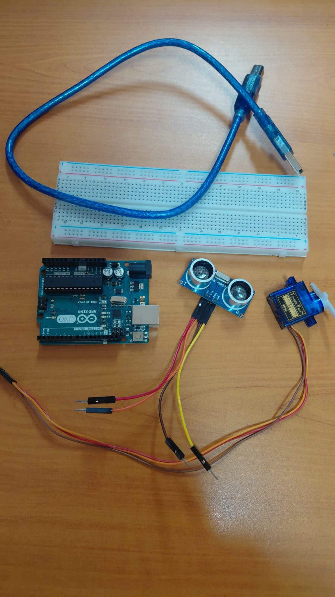
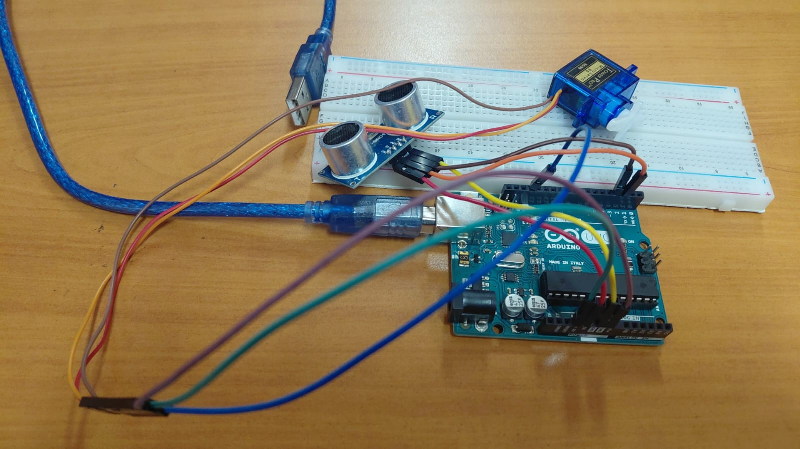

What this guide covers
What the circuit actually does
The HC-SR04 sends an ultrasonic pulse (40 kHz, inaudible) from one transducer and listens for the echo on the other. The Arduino measures how long the echo takes to return using pulseIn(), converts that time to centimeters, and prints the result to the Serial Monitor every 100 ms. If the distance is 20 cm or less, pin 13 goes HIGH — which lights the Arduino's built-in LED (and any external LED wired to the same pin).
That's the whole project. It's intentionally minimal: one sensor, one output, one condition. The point is to understand how the HC-SR04 actually works before embedding it in something more complex like a robot car, where it's easy to lose track of what the sensor is doing amid all the motor control code.
Parts and wiring


| Component | Arduino pin | Notes |
|---|---|---|
| HC-SR04 VCC | 5V | Do not use 3.3V — the sensor requires 5V to operate |
| HC-SR04 GND | GND | Share GND rail on breadboard |
| HC-SR04 Trigger | Digital 2 | OUTPUT — sends the pulse |
| HC-SR04 Echo | Digital 3 | INPUT — receives the echo |
| LED (built-in or external) | Digital 13 | 220 Ω resistor to GND if using external LED |
About the servo in the photos: both photos show a micro servo (SG90) wired to the breadboard. It is not used in this sketch — it's there because this circuit is the first stage of a two-session class exercise. Session 1 is this sketch (ultrasonic + LED). Session 2 adds servo sweep to scan left and right and find the clearest direction, which is the upgrade path into a robot car obstacle-avoidance system. See What to add next at the bottom of this page.
The sketch — line by line
This is the actual file used in class, comments in Spanish left as-is:
const int Trigger = 2; // Pin digital 2 para el Trigger del sensor
const int Echo = 3; // Pin digital 3 para el Echo del sensor
int led = 13;
void setup() {
Serial.begin(9600); // iniciailzamos la comunicación
pinMode(Trigger, OUTPUT); // pin como salida
pinMode(Echo, INPUT); // pin como entrada
digitalWrite(Trigger, LOW); // Inicializamos el pin con 0
pinMode(led, OUTPUT);
}
void loop() {
long t; // tiempo que demora en llegar el eco
long d; // distancia en centímetros
digitalWrite(Trigger, HIGH);
delayMicroseconds(10); // Enviamos un pulso de 10µs
digitalWrite(Trigger, LOW);
t = pulseIn(Echo, HIGH); // obtenemos el ancho del pulso
d = t / 59; // escalamos el tiempo a distancia en cm
if (d <= 20) {
digitalWrite(led, HIGH);
} else {
digitalWrite(led, LOW);
}
Serial.print("Distancia: ");
Serial.print(d); // Enviamos serialmente el valor de la distancia
Serial.print("cm");
Serial.println();
delay(100); // Hacemos una pausa de 100ms
}Why t / 59 and not t / 58?
The standard formula for converting HC-SR04 pulse time to centimeters is d = t / 58, based on sound traveling at 340 m/s (the pulse travels to the object and back, so distance = time × speed / 2, which simplifies to t / 58.8). This sketch uses 59, which is close enough for classroom purposes and produces readings within 1–2 cm of the 58 version at typical distances. Either value works — just be consistent within your project.
Why initialize Trigger LOW in setup?
digitalWrite(Trigger, LOW) in setup() is a defensive initialization: it ensures the Trigger pin starts LOW before the first pulse. Without it, the pin state after reset is undefined on some board clones, and an accidental HIGH on Trigger at startup would cause the sensor to send a spurious pulse and produce a bogus first reading. In practice most genuine Arduino Unos start with pins LOW, but it's a good habit that prevents intermittent bugs on clone boards.
The 100 ms delay
delay(100) at the end of loop() means the sensor takes 10 readings per second. The HC-SR04 datasheet recommends at least 60 ms between triggers to avoid echo interference from the previous pulse — 100 ms is comfortably above that. If you need faster polling (for a faster-moving robot), you can reduce to 60 ms, but going below 60 ms causes the previous echo to interfere with the new trigger and produces erratic readings.
Reading the Serial Monitor output
Open the Arduino IDE Serial Monitor (Ctrl+Shift+M) at 9600 baud. You'll see a continuous stream like this:
Distancia: 83cm
Distancia: 82cm
Distancia: 21cm
Distancia: 19cm ← LED turns ON here
Distancia: 18cm
Distancia: 17cm
Distancia: 18cm
Distancia: 22cm ← LED turns OFF here
Distancia: 83cm
A few things to notice in real use: readings at distances above roughly 3–4 meters become unreliable (the echo is too faint to trigger pulseIn()). Very close distances — below about 3 cm — also read incorrectly because the echo arrives before pulseIn() has fully started listening. Both are real HC-SR04 limitations, not bugs in the sketch.
You'll also occasionally see a reading of 0cm in the stream. This happens when pulseIn() times out — it waits 1 second by default and returns 0 if no echo is received. Dividing 0 by 59 gives 0, which is below the 20 cm threshold and would incorrectly light the LED. In a production project you'd add a check like if (t == 0) return; to skip timed-out readings. In a classroom context we leave it in and use it as a teaching moment about sensor failure modes.
Video demo
This is the actual circuit running — filmed for the school's robotics TikTok account. You can see the LED on pin 13 turning on and off as a hand approaches and retreats from the sensor, and the Serial Monitor in the background showing the live distance readings:
If the embed doesn't load, watch directly on TikTok: @roboticachile — ultrasonic LED demo.
What to add next: servo sweep
The servo visible in both photos is the natural next step. Once the HC-SR04 is returning reliable distance readings, you mount it on the servo horn and add a sweep routine: the servo rotates to 0°, takes a reading; rotates to 90°, takes a reading; rotates to 180°, takes a reading; then points toward whichever direction had the most clearance. This is exactly the scanning logic used in the Version 4 robot car documented in the four-generation robot car article.
The key change needed in the sketch is adding the Servo library and replacing the fixed led output with motor control calls. The sensor-reading code (Trigger, Echo, pulseIn(), t/59) stays exactly the same — that's the value of building and understanding this minimal version first.
| This sketch | With servo sweep added |
|---|---|
| HC-SR04 on pins 2, 3 | Same |
| LED on pin 13 | Replace with motor driver calls |
| Fixed single reading | Servo sweeps 0°→90°→180°, reads at each |
| Threshold: 20 cm | Adjust to 30–100 cm for robot speed |
| No decision logic | Turn toward direction with most clearance |
FAQ
Can I change the 20 cm threshold?
Yes — change the 20 in if (d <= 20) to any distance in centimeters. For a robot car at typical classroom speeds, 30–50 cm gives more reaction time. For a short-range parking sensor on a desk, 10–15 cm is more useful.
Why does the reading sometimes jump to 0 or a huge number?
Two causes: a 0 reading means pulseIn() timed out (no echo received — usually because the object is too far away or the sensor is pointed at a surface that scatters the sound, like fabric or angled walls). A very large reading means the echo from a previous cycle is being picked up — reduce the delay between readings or add if (t == 0 || t > 25000) return; to filter both cases.
Does this work at 3.3V (for an ESP32 or similar)?
The HC-SR04 requires 5V on its VCC pin to operate — it will not trigger reliably at 3.3V. For 3.3V microcontrollers, use the HC-SR04P variant (which accepts 3–5.5V) or add a logic-level shifter between the ESP32 and the sensor's Echo pin (since the Echo output is at 5V, which can damage some 3.3V-only GPIO pins).
What is the maximum reliable range?
The HC-SR04 datasheet specifies 2 cm to 400 cm. In practice, reliable readings drop off above 2–3 meters on soft or angled surfaces. On a hard flat wall, we've gotten consistent readings up to about 3 meters in classroom conditions. Below 3 cm, the echo returns before the sensor is ready to listen and readings are not usable.
Can I use a different pin for Trigger or Echo?
Yes — any digital pin works. The sketch uses pins 2 and 3, which are also the interrupt pins on the Uno. Using them for pulseIn() (which doesn't use interrupts) is fine, but if you later want to add interrupt-based echo timing for faster readings, pins 2 and 3 are the right choice to start with.
Photos and video taken during a classroom session. The TikTok video is from the school's own account (@roboticachile). No sponsored content or paid placements.
Continue in this series
Once this circuit is working, the natural next project is the obstacle-avoiding robot car — which uses the same HC-SR04 wiring as the foundation of its avoidance logic. For the full classroom progression, see from first LED to voice-controlled car.